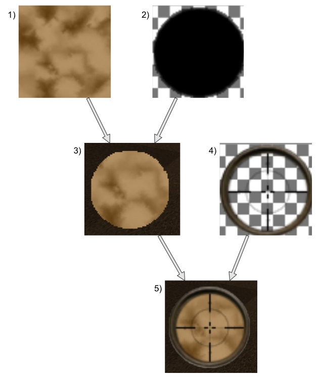

Pagina
principale
Minimappa
Trovare
delle casse di legno sparse in un territorio cercandole dall'alto di
un elicottero è un compito certamente difficile. Fortunatamente si
ha a disposizione una pratica minimappa in grado di mostrare una
porzione del terreno attorno al nostro velivolo e di segnalarci la
posizione di una cassa con un puntino lampeggiante.
La minimappa del gioco è realizzata in modo che si orienti in
base alla direzione dell'elicottero, restando sempre centrata sulla
posizione di quest'ultimo. Per ottenere queste funzionalità e il suo
aspetto circolare, la procedura di rendering della minimappa è
piuttosto articolata, tanto da avere un file di sorgente interamente
dedicato alla sua realizzazione. Questa è organizzata in step
successivi, come mostrato in figura.
- Subito dopo il caricamento del terreno di gioco, in
loadMMap()
viene generata una texture di pari dimensione e viene compilata
pixel per pixel dandole una gradazione di colore basata sull'altezza
del terreno in quel riquadro di terreno. Questa texture è
ovviamente fissa e rimane invariata durante l'intera partita.
-
Quando
si richiama la procedura drawMMap()
per disegnare a schermo la minimappa, si abilita lo stencil test
(GL_STENCIL_TEST) per poter disegnare soltanto in una
porzione di schermo delimitata da una seconda texture che svolge
funzione di maschera. Questa texture raffigura un'area circolare di
pixel neri ed è completamente trasparente altrove. Prima ancora di
iniziare il disegno, si vuole infatti che lo stencil buffer assuma
il valore 1 in corrispondenza dei frammenti non trasparenti della
maschera. Per questo viene settato il flag di alpha test
(GL_ALPHA_TEST) e viene richiamata l'istruzione
glAlphaFunc(GL_NOTEQUAL, 0), si vuole che la pipeline grafica
faccia passare soltanto quei fragment che hanno un valore diverso da
0, ovvero che sono anche solo parzialmente opachi.
A questo punto
si imposta la funzione di stencil test opportuna:
glStencilFunc(GL_ALWAYS, 1, 1) assieme a
glStencilOp(GL_REPLACE, GL_REPLACE, GL_REPLACE);
in questo modo il test sullo stencil viene sempre passato (ma solo
per i pixel che raggiungono tale stadio della pipeline) e nella
relativa posizione dello stencil buffer si avranno dei valori pari a
1.
Normalmente, quando si disegnano delle maschere per
“impressionare” lo stencil buffer si disabilita la scrittura nel
color buffer per non sporcare l'immagine finale (con l'istruzione
glColorMask), nel
nostro caso questo non è necessario e anzi, torna utile in quanto
si riempie l'area circolare della minimappa con un colore nero
uniforme, in modo che – qualora l'elicottero si spostasse vicino
al bordo della mappa – le porzioni di terreno esterne alla scena
risultino comunque uniformemente colorate e non trasparenti. -
Arrivati a questo punto, si
proseguire disegnando esclusivamente dove lo stencil buffer contiene
dei valori pari a 1. Per questo si richiamano le funzioni
glStencilFunc(GL_EQUAL, 1, 1) e glStencilOp(GL_KEEP,
GL_KEEP, GL_KEEP): la prima permette di superare lo stencil test
solo laddove i fragment in entrata sono in corrispondenza con un
valore uguale a 1 nello stencil buffer, la seconda mantiene
inalterato quest'ultimo indipendentemente dal risultato del test.
In
seguito la texture di terreno generata al punto 0 – che
conterrebbe l'intera area di gioco – viene ruotata solidalmente
alla direzione attuale dell'elicottero e traslata in modo da
centrarla rispetto alla posizione del velivolo.
Per segnalare la
presenza di un'eventuale cassa presente nella scena, viene
sovrimpresso un piccolissimo rettangolo nella posizione
corrispondente della texture: se la cassa è fuori dall'area
visibile della mappa circolare, verrà scartata per effetto dello
stencil. -
Arrivati a questo punto abbiamo ottenuto il risultato mostrato al
punto 3 della figura: la minimappa è disegnata correttamente ma
appare il contorno frastagliato della texture di maschera applicata
allo stencil. Per nascondere questo inestetismo viene applicata
un'ultima texture trasparente che raffigura un bordo circolare e
qualche altra decorazione. Chiaramente, in questo ultimo passaggio
viene disabilitato lo stencil test o si riotterrebbe la stessa
scanalatura vista al punto precedente.
Pagina
principale